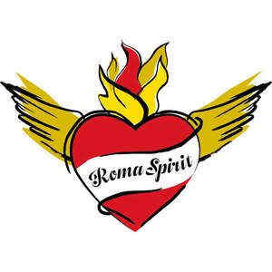

Trade Mark Journal No.2026/007 13 February 2026
UK00004332249 29 January 2026 (35,41)

- Class 35
- Advertising, marketing and promotional services; Advertising planning; Preparation of advertising material; Public relations; Sponsorship search; Distribution of advertising materials; Publicity services; Organisation of exhibitions and events for commercial or advertising purposes; On-line advertising and marketing services; Organisation of events for commercial and advertising purposes; Promotion of special events; Dissemination of advertising, marketing and publicity materials; Development of promotional campaigns; Business consultancy services relating to management of fund raising campaigns; Advertising and marketing consultancy; Sponsorship search consultancy services; Advertising services to promote public awareness of social issues; Business networking; Arranging of competitions for advertising purposes.
- Class 41
- Production of television programmes; Preparation of television programmes; Production of videos; Organisation of exhibitions for cultural or educational purposes; Organisation of cultural events; Production of television features; Arranging and presenting of live performances; Arranging and conducting of competitions [education or entertainment]; Arranging, conducting and organisation of conferences; Arranging, conducting and organisation of seminars; Organisation and presentation of shows; Arranging and conducting award ceremonies; Arranging, conducting and organisation of workshops; Providing online electronic publications, not downloadable; Providing online videos, not downloadable; Conducting of educational events; Entertainment, education and instruction services.
Ľubomíra Slušná-Franz
Representative: Trama Legal s.r.o.